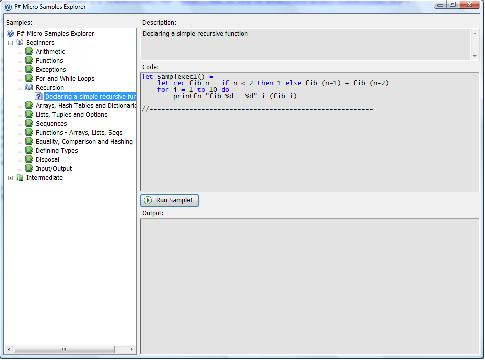

Description
This program allows the user to view and execute many short blocks of code that demonstrate many of the language features for F# and some of the library functionality in FSharp.Core.dll.

Files
- sample.fs - Defines attributes to mark samples in code and provides the functionality to build the list of samples by searching through the .fs files in the project folder for correctly attributed methods.
- sampleform.fs - Contains the UI code for the window that presents the list of samples to be browsed and executed.
- beginners.fs - Defines samples demonstrating much of the basic functionality in F#.
- intermediate.fs - Defines samples demonstrating built-in data structures like Set and Map as well as more advanced object oriented constructs like interfaces.
- program.fs - Generates the list of samples and checks the command line arguments to determine whether to run all of the samples automatically or the display the UI for the sample browser.
- SampleForm.resx - Resource file containing serialized icon and image data for the UI.

Prerequisites
This sample requires F# which is included in Visual Studio 2010 RC or which is available as a downloadable CTP add-in for Visual Studio 2008. For more information and downloads please visit FSharp.net.